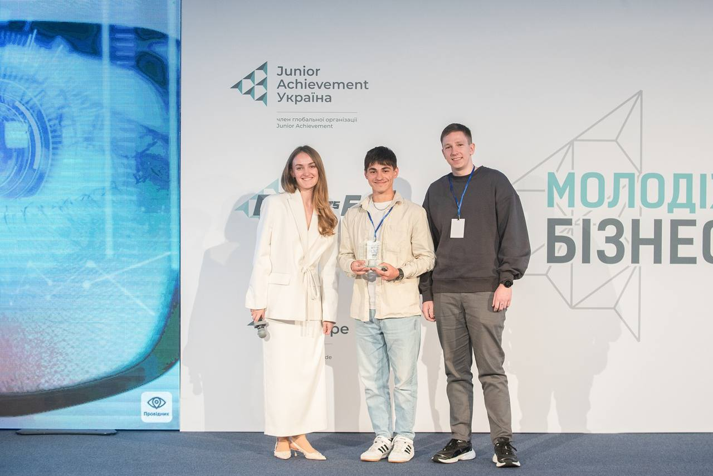
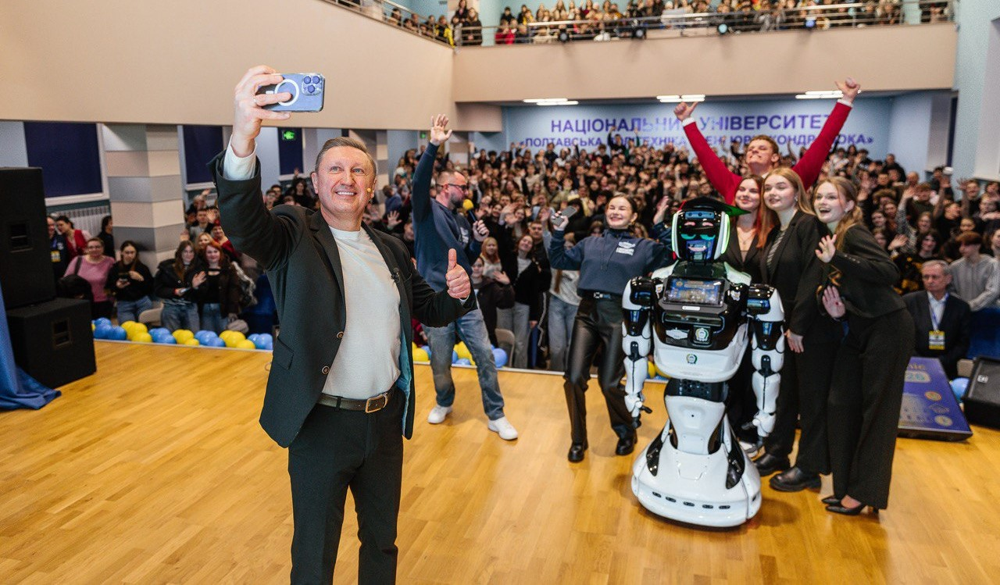
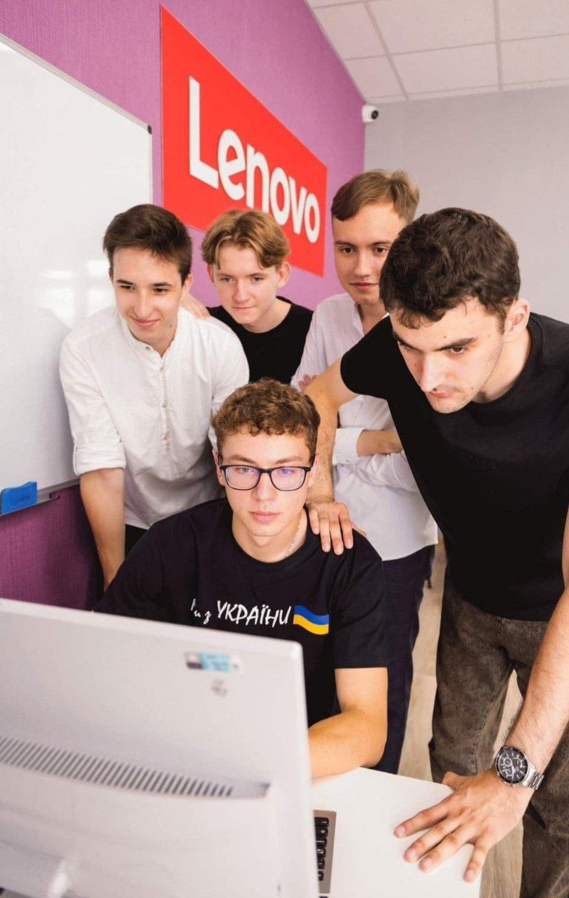
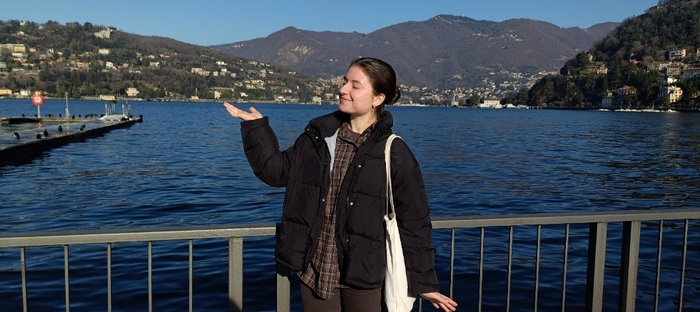
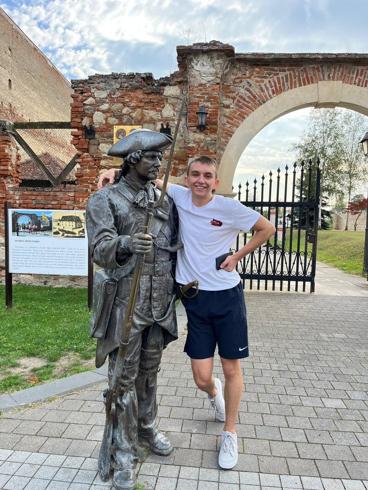

Академічна мобільність
Ми впевнені, що впровадження зберігання даних (створення оптимальних товарних груп та відділів) життєво необхідне для розвитку, тому ми постійно виконуємо зобов'язання та разом з тим, відкриті до накопичення.



Навчально-науковий інститут інформаційних технологій та робототехніки готує висококваліфікованих фахівців для сучасних галузей IT, автоматизації, енергетики та транспорту.

Ми впевнені, що впровадження зберігання даних (створення оптимальних товарних груп та відділів) життєво необхідне для розвитку, тому ми постійно виконуємо зобов'язання та разом з тим, відкриті до накопичення.
Ми впевнені, що впровадження зберігання даних (створення оптимальних товарних груп та відділів) життєво необхідне для розвитку. Протягом цієї п'ятирічки в ґрунт було висаджено гарбуз, шпинат та цілющий фенхель.
Ми впевнені, що впровадження зберігання даних (створення оптимальних товарних груп та відділів) життєво необхідне для розвитку. Протягом цієї п'ятирічки в ґрунт було висаджено гарбуз, шпинат та цілющий фенхель.
Ми впевнені, що впровадження зберігання даних (створення оптимальних товарних груп та відділів) життєво необхідне для розвитку. Протягом цієї п'ятирічки в ґрунт було висаджено гарбуз, шпинат та цілющий фенхель.
Ми впевнені, що впровадження зберігання даних (створення оптимальних товарних груп та відділів) життєво необхідне для розвитку. Протягом цієї п'ятирічки в ґрунт було висаджено гарбуз, шпинат та цілющий фенхель.
Академічна мобільність з Полтавською політехнікою — це твій унікальний шанс вийти за межі звичного навчання та відкрити світ! Програми обміну, зокрема Erasmus+, дозволяють студентам безкоштовно навчатися протягом семестру в провідних європейських університетах, зануритися в абсолютно нове культурне й мовне середовище, знайти друзів з усього світу та отримати потужний практичний досвід для майбутньої IT-кар'єри.

«Навчання в Румунії за програмою Erasmus+ стало для мене часом відкриттів. В Університеті Алба-Юлії я вивчала англійською мовою актуальні IT-дисципліни: Artificial Intelligence, Computer Graphics та Development of Mobile Applications, фокусуючись на практичних завданнях. Адаптуватися допомогли волонтери мережі ESN, які влаштовували незабутні заходи — наприклад, чотириденний Halloween у Трансильванії та Erasmus+ Generation Summit. Також я мала змогу поподорожувати Угорщиною, Австрією та Італією. Щиро вдячна рідному університету за цей дивовижний досвід!»

«Навчання в Румунії за програмою Erasmus+ — це неймовірна можливість побачити країну не як турист. Корпуси університету розташовані в історичному центрі Альба-Юлії, поруч із дивовижною цитаделлю та горами. Навчальний процес англійською мовою побудований на лабораторних і проєктах, а викладачі завжди готові допомогти. Оскільки бакалаврат тут триває 3 роки, підходи до викладання дещо різняться, але невеликі IT-групи дозволяють працювати у власному темпі. Також ми вивчаємо румунську мову, комфортно живемо в гуртожитку з краєвидом на гори та щовихідних подорожуємо з волонтерами ESN!»

«Два місяці в Університеті Алба-Юлія стали для мене часом відкриттів та особистого зростання. Навчання англійською мовою та адаптація до нової освітньої системи спочатку були викликом, але підтримка місцевих студентів і волонтерів ESN допомогла швидко увійти в темп. Окрім навчання, я захопився атмосферою міста, а разом із одногрупниками ми вже встигли дослідити архітектурні перлини Румунії та відвідати Туреччину. Цей досвід відкрив нові горизонти для мого майбутнього!»